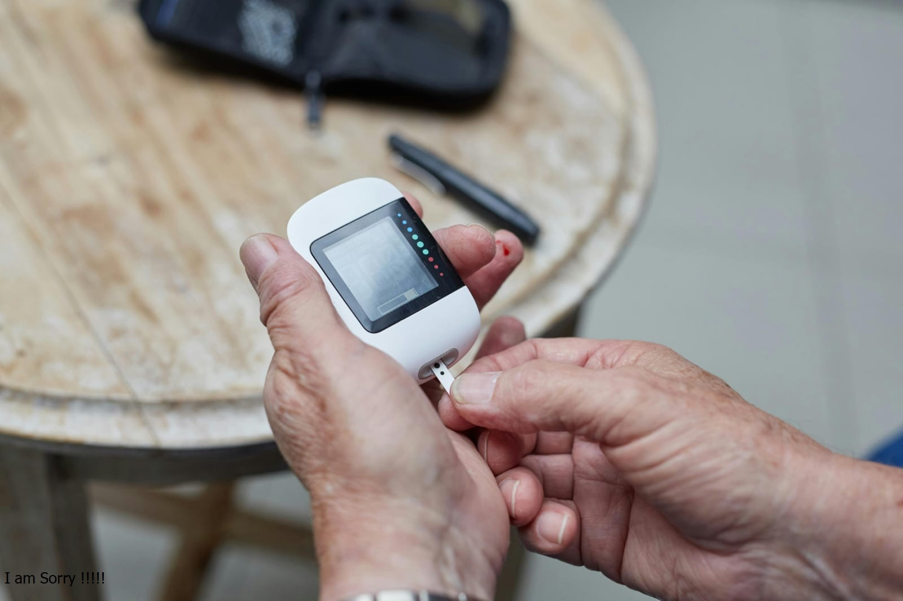
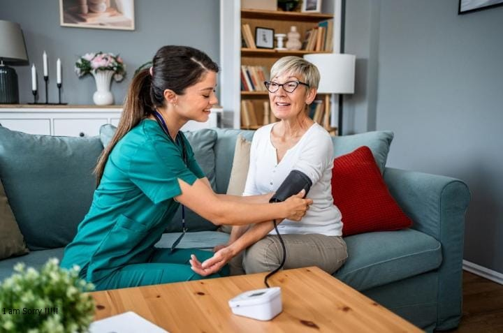
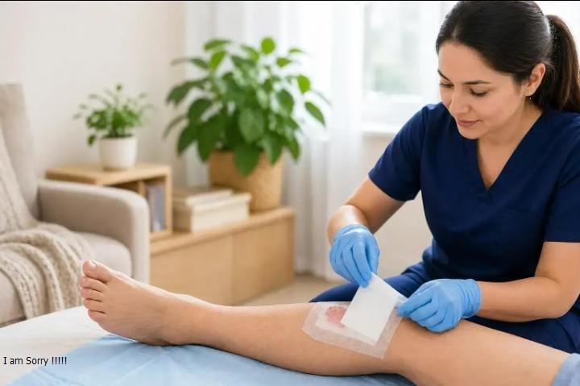
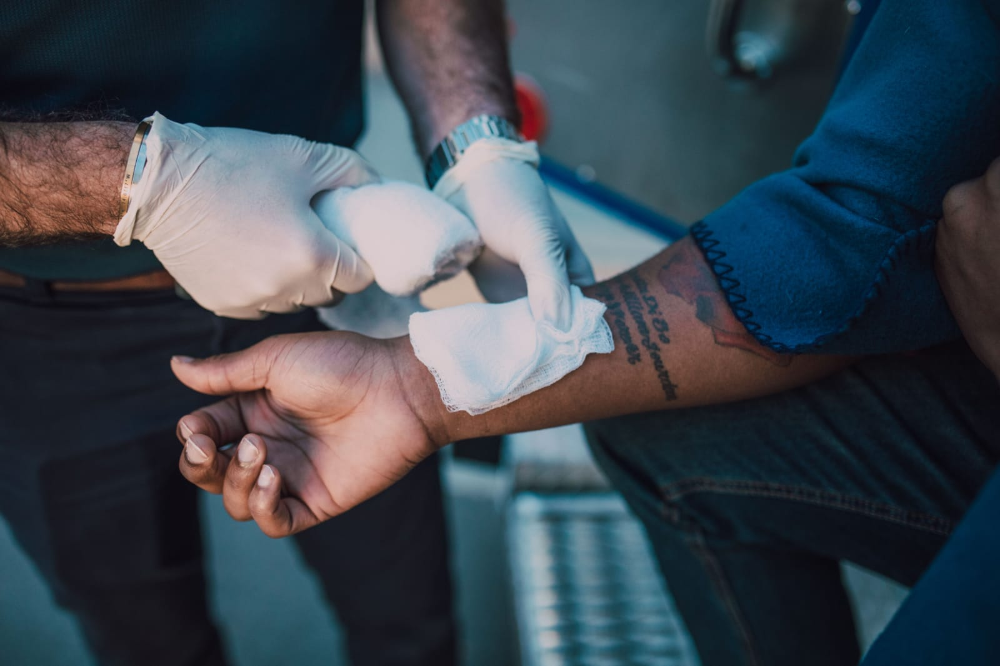
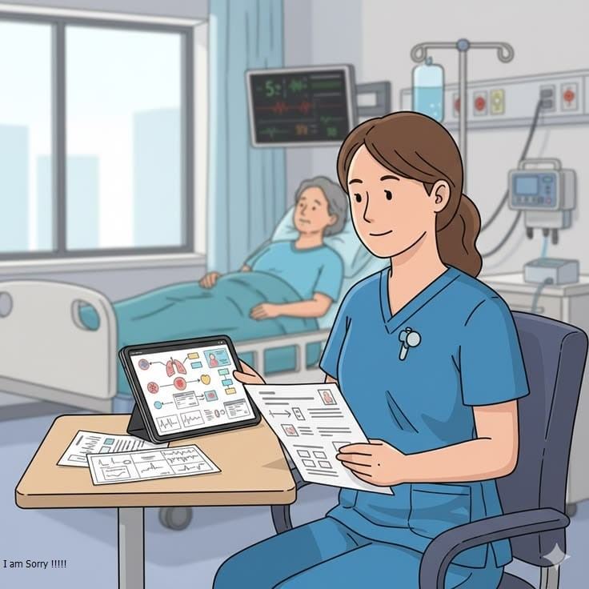

01
رعاية منزلية باهتمام واطمئنان
صحتك تستحق
صحتك تستحق
رعاية تليق بك، في منزلك.
نقرّب الرعاية الصحية إليك من خلال فريق مؤهل وخدمات منزلية تساعدك على الاعتناء بصحتك براحة وخصوصية.
مقدمو رعاية مؤهلونالاهتمام يبدأ من الثقة
خصوصية واهتمامراحتك أولويتنا
رعاية في منزلكراحة لك ولعائلتك
كوادر مؤهلةاهتمام مهني ومنظم
تنسيق سهلطلب الخدمة بخطوات واضحة
اهتمام بخصوصيتكبياناتك محل عناية
خدمات عافية
رعاية صحية، تفاصيلها تهمّك
اختر الخدمة التي تناسب احتياجك، وسنساعدك على تنظيم طلب الرعاية المنزلية.

02
0304
إعطاء العلاج الموصوف
مساعدة تمريضية في إعطاء العلاج الموصوف ضمن الاختصاص والتعليمات الطبية.
اطلب الخدمة ←
05
06تغيير ضمادات ما بعد العمليات
متابعة الضمادات والعناية الموضعية حسب تعليمات الطبيب المعالج.
اطلب الخدمة ←07
08
09
10
11

AFIYAاهتمام
من القلب♡
من القلب♡
من نحن
لأن الرعاية تبدأ
لأن الرعاية تبدأ
بالاهتمام الحقيقي.
عافية منصة تهدف إلى تسهيل الوصول إلى الخدمات الصحية المنزلية، عبر تنظيم التواصل بين المرضى ومقدمي الرعاية، وجعل طلب الخدمة أوضح وأسهل.
01
سهولة الوصولخدمات متعددة من مكان واحد.
02
وضوح الطلبعرض تفاصيل الخدمة والتكلفة قبل التأكيد.
03
الاهتمام بالخصوصيةالتعامل مع بيانات المستخدم بعناية.
خطوات بسيطة
الرعاية تبدأ بخطوة
طريقة واضحة لطلب الخدمة التي تحتاجها.
أنشئ حسابك
سجّل بياناتك الأساسية للبدء باستخدام المنصة.
اختار الخدمة
حدد نوع الرعاية المطلوبة واطّلع على التفاصيل.
نسّق الزيارة
تُنسّق الزيارة مع مقدم الخدمة بعد قبول الطلب.